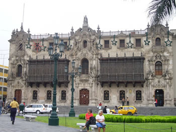
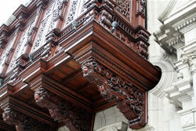

El retorno de los balcones de Lima
El centro histórico de Lima 
Hace unos diez años, el centro histórico de Lima había dejado de ser el centro grandioso y elegante que había sido durante siglos. Las veredas de toda la zona céntrica estaban cubiertas de quioscos donde los vendedores ambulantes vendían sus productos. Las plazas estaban cubiertas de basura y asoladas por los ladrones y las bandas de pirañas, como se conoce en Lima a los niños de la calle que roban en masa. Con frecuencia, los turistas evitaban Lima. No eran los únicos; los limeños simplemente dejaron de visitar el centro de su propia ciudad. El centro, como muchos de sus monumentos históricos, parecía estar al borde del colapso.
Hoy el centro histórico de Lima es un lugar muy diferente. Las calles están libres de vendedores ambulantes, las veredas no están cubiertas de basura y los parques son seguros. Los monumentos históricos están siendo rescatados y protegidos. Todos los días puede verse a los turistas sacando fotografías de los numerosos monumentos de la ciudad y los domingos el centro se llena de limeños que llegan de otras partes de la ciudad.
La preservación de la herencia cultural
Lima es uno de los más exitosos ejemplos del movimiento de revitalización de los centros históricos de las ciudades que se observa en toda América Latina. El proceso de rescatar y preservar la herencia cultural de una ciudad contribuye a atraer el turismo y la inversión, dice Alberto Andrade, antiguo alcalde de Lima.
Andrade cree que es esencial que los limeños aprecien y valoren el centro de Lima como la expresión de una cultura y una identidad que vale la pena preservar. Lima había tomado los primeros pasos en este sentido antes de que Andrade entrara en escena. En 1991, el Patronato de Lima logró que la UNESCO declarara al centro histórico Patrimonio de la Humanidad, por la gran concentración de tesoros históricos y artísticos.
Cuando Andrade fue elegido alcalde, comenzaron a verse cambios tangibles. Casi inmediatamente el gobierno municipal abordó uno de los principales problemas de Lima, la eliminación de los veinte mil vendedores ambulantes de las calles de la ciudad ofreciéndoles incentivos para comprar espacios en uno de los mercados remodelados situados fuera del centro histórico. En poco más de un año, casi todos los vendedores ambulantes habían salido de los lugares públicos.
Después, el gobierno municipal empezó limpiar y remodelar algunos de los espacios que quedaron libres y ensanchó la Plaza de Armas, virtualmente eliminó la basura de las calles del centro histórico y mejoró la seguridad de la zona. La municipalidad también distinguir restablecer el prestigio de la zona como centro cultural con exposiciones de arte que han atraído a los peruanos y a los turistas a la zona céntrica.
Adopte un balcón
El gobierno de Andrade también ha puesto en práctica un interesante programa denominado* «Adopte un balcón». Los edificios de Lima contienen un gran número de balcones cerrados de madera de influencia española y morisca, que son característicos de la ciudad. Estos notables balcones, que datan del siglo XVI a mediados del siglo XIX, y que aún parecen flotar sobre las calles de Lima, constituyeron en una época una especie de vínculo entre las casas y las calles de la ciudad. Con el transcurso de los años, el estilo varió de balcones de madera verde pintada con intrincados enrejados, a balcones de madera de color natural finamente tallada, hasta los de ventanas de vidrio. A mediados del siglo XIX los balcones habían pasado de moda, y muchos de ellos fueron destruidos. En la época en que Andrade asumió el cargo, la mayor parte de los balcones se hallaban seriamente deteriorados.
«Estos balcones son únicos en el mundo, o si existen, tienen muy pocas variaciones», dice el arquitecto Adolfo Vargas. «Los balcones de otras ciudades son lugares abiertos, los de aquí son cerrados y le han dado a Lima la reputación de «ciudad de los balcones». Los balcones constituyen el símbolo fácilmente identificable de la ciudad, visible en el centro y presente en la memoria colectiva».
Por estas razones, el programa ha contribuido a restaurar los balcones, y a crear una conciencia e incluso un símbolo de todo el proceso de revitalización de Lima. Hasta ahora, el programa ha logrado la adopción y la restauración de más de setenta balcones por parte de embajadas extranjeras, de empresas y de individuos. Se espera que el programa de los balcones habrá de continuar hasta que se hayan restaurado los cuatrocientos balcones de la ciudad y se haga justicia a la reputación que se ha ganado como «la ciudad de los balcones».
Los proyectos futuros
A pesar de estos cambios, aún queda mucho por hacerse en el centro histórico. Mientras que la nueva visión contempla que se convierta en un destino turístico y un centro cultural, también reconoce que es y siempre debería ser un barrio residencial. El problema de la vivienda en el centro es uno de los más graves. En la actualidad, veinte mil viviendas del centro histórico necesitan algún tipo de remodelación, y de éstas, cinco mil se hallan al borde del colapso.
Otro de los grandes proyectos necesarios para completar el proceso de revitalización, incluidos, entre otros proyectos, el transporte, la vivienda y el proyecto de los parques requerirá por lo menos diez años y costará 500 millones de dólares. Para sufragar estos gastos se necesitan préstamos de bancos multinacionales y grandes inversiones privadas.
Una nueva apreciación de lo propio
«La labor de la municipalidad ha fortalecido la autoestima de la ciudad, y ha generado una nueva tendencia de apreciación del centro. Hoy la gente reconoce que el centro es hermoso, que pueden volver a visitarlo y que el centro les ha sido devuelto», dice Patricia Uribe, representante de la UNESCO en el Perú. «Por primera vez en diez años, hay muchos limeños que han regresado al centro, llevando a sus hijos. Éstos son niños que a la edad de diez o doce años jamás habían puesto un pie en el centro de la ciudad, que nunca habían visto la catedral. Han venido a ver la catedral, han venido a ver su centro. Este fenómeno de fortalecimiento de la identidad y de apreciación de lo propio es muy importante».